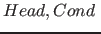
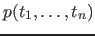
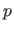
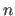
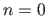
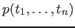
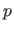
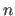
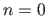

Next: Example Up: Overview Previous: Example Contents
A predicate is defined with pattern-matching rules. Picat has two types of rules: the non-backtrackable rule => , and the backtrackable rule
, and the backtrackable rule ?=> . The
. The  takes the form
, where  is called the predicate name, and  is called the arity. When , the parentheses can be omitted. The condition
takes the form
, where  is called the predicate name, and  is called the arity. When , the parentheses can be omitted. The condition  , which is an optional goal, specifies a condition under which the rule is applicable. For a call , if matches
, which is an optional goal, specifies a condition under which the rule is applicable. For a call , if matches  and
and  succeeds, meaning that the condition evaluates to true, the rule is said to be applicable to . When applying a rule to call , Picat rewrites into
succeeds, meaning that the condition evaluates to true, the rule is said to be applicable to . When applying a rule to call , Picat rewrites into  . If the used rule is non-backtrackable, then the rewriting is a commitment, and the program can never backtrack to . If the used rule is backtrackable, however, the program will backtrack to once
. If the used rule is non-backtrackable, then the rewriting is a commitment, and the program can never backtrack to . If the used rule is backtrackable, however, the program will backtrack to once  fails, meaning that
fails, meaning that  will be rewritten back to , and the next applicable rule will be tried on .
will be rewritten back to , and the next applicable rule will be tried on .